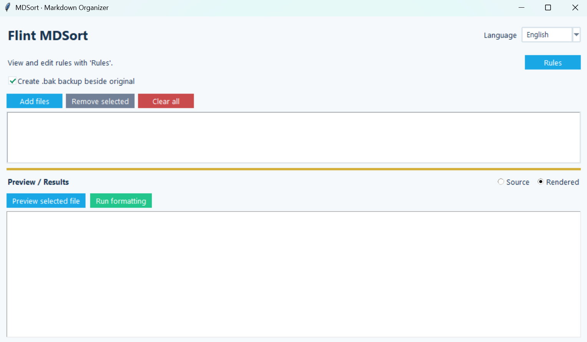

Flint MDSort
Version: 1.0.0
Flint MDSort
Flint MDSort is a GUI and command-line tool that standardizes line breaks and formatting across multiple Markdown documents using configurable rules. It lets you preview the results before making any changes to the original files.
How to Use
- Launch the program and select Markdown documents using
Add Files. - Select a document from the file list to automatically preview the formatted result.
- Switch between
Rendered ViewandSource Viewto inspect the result. - If needed, open
View Rulesto enable or disable formatting rules and save your preferences. - Choose whether to back up the original files, then click
Run Formatting.
Key Features
- Add multiple Markdown files, remove selected files, or clear the entire list
- Merge consecutive lines in regular paragraphs into a single line
- Merge continuation lines within lists
- Convert
**bold text**and__bold text__into backtick-enclosed text - Preserve fenced code blocks, Markdown tables, and HTML blocks
- Enable or disable individual formatting rules and save preferences
- Preview formatted Markdown using the shared
flintersMarkdown renderer, with an option to switch to source view - Automatically update the preview when selecting a file
- Adjustable horizontal divider for resizing the file list and preview areas
- Auto-hiding scrollbars that appear only when needed
- Optional
.bakbackup files created alongside the originals - Korean and English interfaces, with automatic restoration of window size and position
- Support for both GUI and command-line operation
Running the Program
Launch the GUI:
python mdsort.pySpecify one or more files to process them in command-line mode:
python mdsort.py README.md
python mdsort.py first.md second.md third.mdCommand-line options:
python mdsort.py README.md --no-backup
python mdsort.py README.md --stdout
python mdsort.py README.md --check--no-backup: Modify files without creating.bakbackups--stdout: Print the formatted result without modifying the original file (single file only)--check: Check whether formatting changes are needed without modifying any files